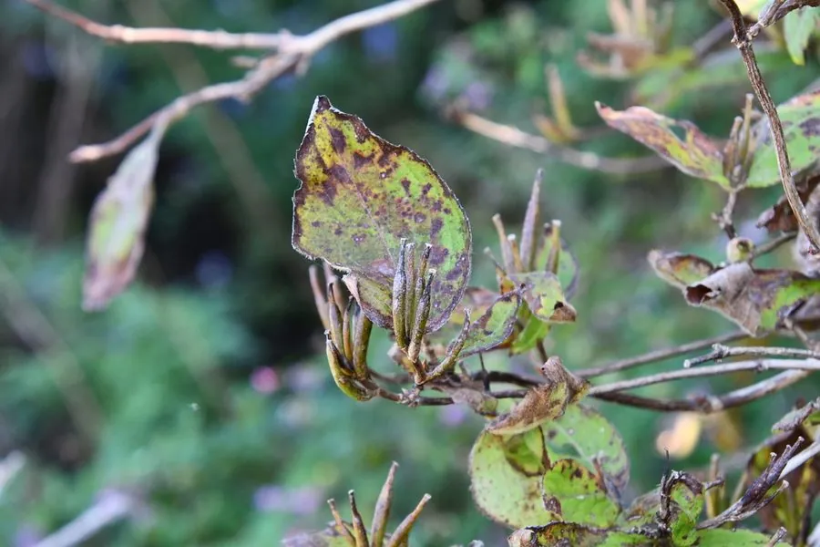

灌木与花木 · 植物界
锦带花 Weigela florida

忍冬科落叶灌木，春季开粉红至紫红色漏斗状花，花量繁密如锦带，耐寒性强，是北方庭院常见的观花灌木。
- 分类
- 门被子植物门纲木兰纲目川续断目科忍冬科属锦带花属
- 栖息环境
- 海拔 1000 米以下的山坡灌丛、林缘与庭院，喜光耐寒
- 地理分布
- 中国东北、华北；朝鲜半岛、日本有分布
- 保护级别
- 暂无评估；中国未列入国家重点保护野生植物名录
物种志
锦带花为忍冬科锦带花属落叶灌木，高 1–3 米，枝条开展，幼枝具短柔毛。叶片对生，椭圆形至卵状椭圆形，边缘具细锯齿。花 1–4 朵聚生于叶腋或枝顶，花冠漏斗状，粉红色至紫红色，花期 4–6 月；蒴果柱状，果期 8–9 月。
锦带花原产中国东北、华北及朝鲜半岛、日本，生于山坡灌丛与林缘。它喜光，也耐半阴，耐寒性强，适宜疏松肥沃、排水良好的土壤。花量繁密，花色艳丽，花期长达月余，因花朵密集如锦带而得名，常植于庭院、公园与花篱。花为蜜源，可吸引蜜蜂与蝴蝶；枝条柔软，可编筐。同属的园艺品种繁多，有白花、紫叶等类型。
形态与习性
- 株高1–3 m，枝条开展
- 花期4–6 月，花冠漏斗状
- 果期8–9 月，蒴果柱状
- 光照喜光，也耐半阴
- 水分喜湿润，忌积水
- 土壤疏松肥沃、排水良好的壤土
- 主要用途庭院观花、花篱，枝条编筐
趣味知识
- 锦带花的花朵密集排列在枝条上，形如一条彩色锦带。
- 它耐寒性强，在中国东北地区可露地越冬。
- 锦带花的花期长达一个多月，是北方庭院的重要春花。
- 同属园艺品种有白花、紫叶、矮生等类型，观赏价值更高。